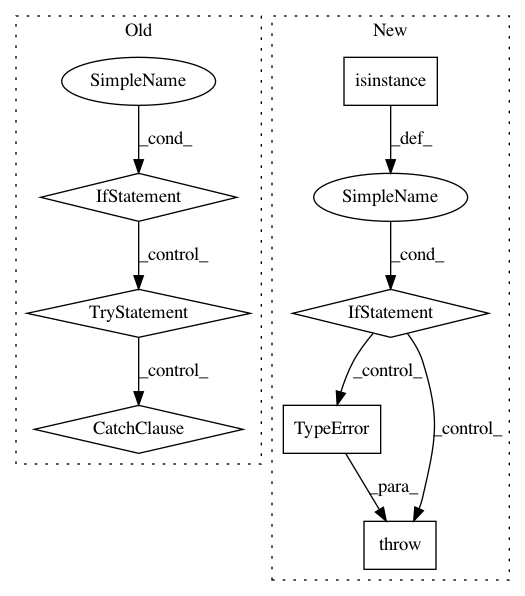

e3fd56b08ed5c4d7247a147c3fab7c0fe59e9a0e,pymc3/distributions/mixture.py,Mixture,comp_dists,#Mixture#Any#,111
Before Change
self._comp_dists = _comp_dists
// Tests if the comp_dists can call random with non None size
with _DrawValuesContextBlocker():
if isinstance(self.comp_dists, (list, tuple)):
try:
[comp_dist.random(size=23)
for comp_dist in self.comp_dists]
self._comp_dists_vect = True
except Exception:
// The comp_dists cannot call random with non None size or
// without knowledge of the point so we assume that we will
// have to iterate calls to random to get the correct size
self._comp_dists_vect = False
else:
try:
self.comp_dists.random(size=23)
self._comp_dists_vect = True
except Exception:
// The comp_dists cannot call random with non None size or
// without knowledge of the point so we assume that we will
// have to iterate calls to random to get the correct size
self._comp_dists_vect = False
def _comp_logp(self, value):
comp_dists = self.comp_dists
try:
After Change
@comp_dists.setter
def comp_dists(self, comp_dists):
self._comp_dists = comp_dists
if isinstance(comp_dists, Distribution):
self._comp_dist_shapes = to_tuple(comp_dists.shape)
self._broadcast_shape = self._comp_dist_shapes
self.comp_is_distribution = True
else:
// Now we check the comp_dists distribution shape, see what
// the broadcast shape would be. This shape will be the dist_shape
// used by generate samples (the shape of a single random sample)
// from the mixture
self._comp_dist_shapes = [to_tuple(d.shape) for d in comp_dists]
// All component distributions must broadcast with each other
try:
self._broadcast_shape = np.broadcast(
*[np.empty(shape) for shape in self._comp_dist_shapes]
).shape
except Exception:
raise TypeError("Supplied comp_dists shapes do not broadcast "
"with each other. comp_dists shapes are: "
"{}".format(self._comp_dist_shapes))
// We wrap the _comp_dist.random by adding the kwarg raw_size_,
// which will be the size attribute passed to _comp_samples.
// _comp_samples then calls generate_samples, which may change the
// size value to make it compatible with scipy.stats.*.rvs
self._generators = []
for comp_dist in comp_dists:
generator = Mixture._comp_dist_random_wrapper(comp_dist.random)
self._generators.append(generator)
self.comp_is_distribution = False
@staticmethod
def _comp_dist_random_wrapper(random):
Wrap the comp_dists.random method to take the kwarg raw_size_ and
use it"s value to replace the size parameter. This is needed because
In pattern: SUPERPATTERN
Frequency: 3
Non-data size: 7
Instances
Project Name: pymc-devs/pymc3
Commit Name: e3fd56b08ed5c4d7247a147c3fab7c0fe59e9a0e
Time: 2019-02-16
Author: luciano.paz.neuro@gmail.com
File Name: pymc3/distributions/mixture.py
Class Name: Mixture
Method Name: comp_dists
Project Name: biolab/orange3
Commit Name: 1e42cdbc38abf326aabf9776d653bd4fdc05c437
Time: 2013-02-13
Author: janez.demsar@gmail.com
File Name: Orange/canvas/utils/qtcompat.py
Class Name:
Method Name: toPyObject
Project Name: biolab/orange3
Commit Name: ff062da91ca42f483a3a7c739835de3825c7898d
Time: 2013-02-13
Author: janez.demsar@gmail.com
File Name: Orange/canvas/utils/qtcompat.py
Class Name:
Method Name: toPyObject